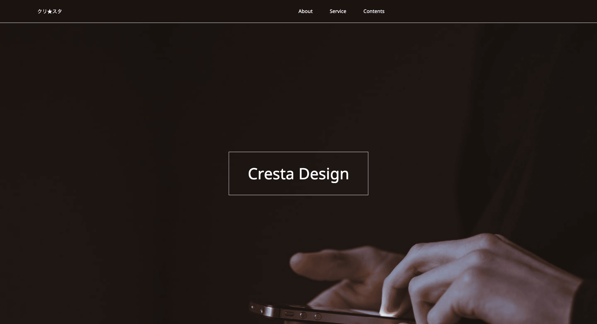
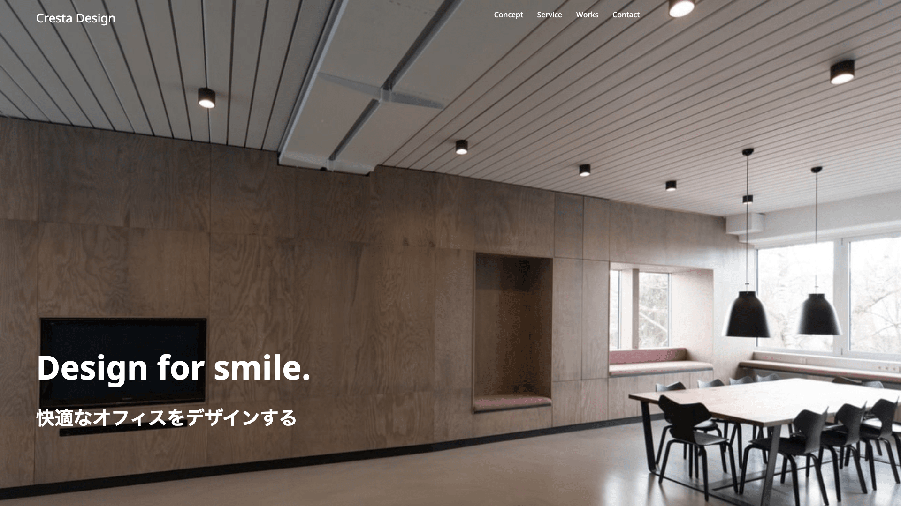
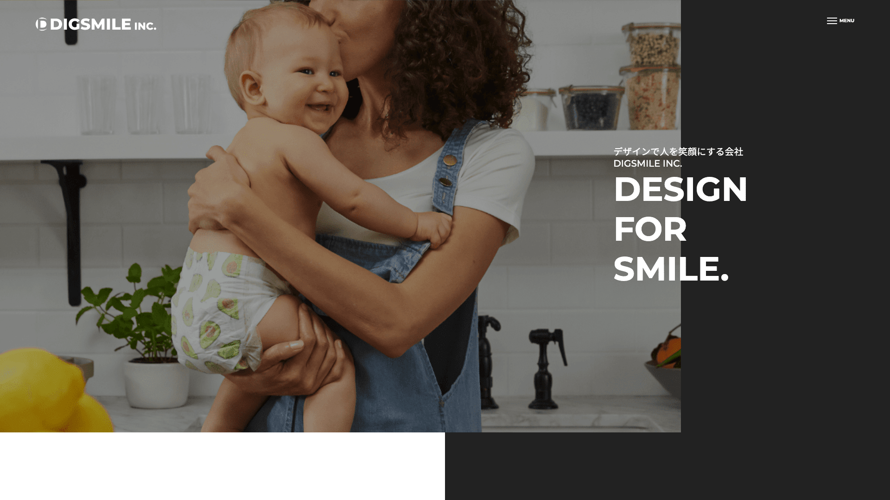
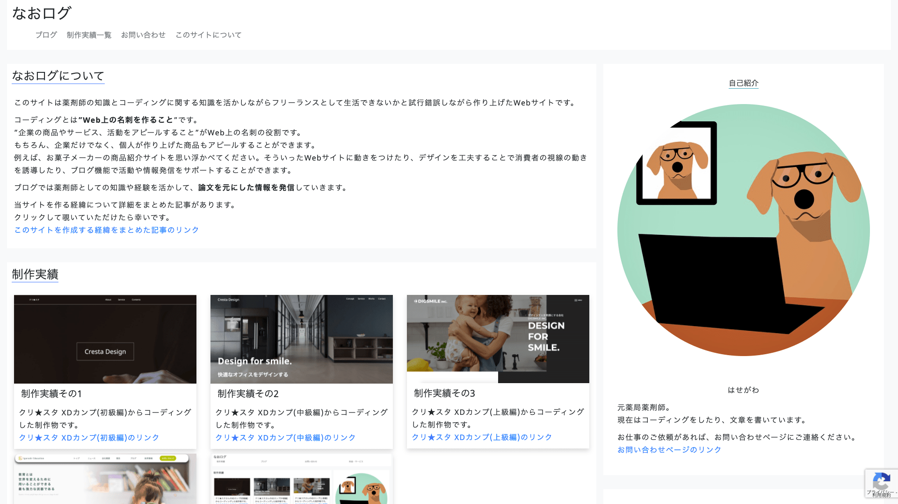

実績一覧 Web制作  クリスタさんのXDカンプ(初級編)をコーディングしました。 使用言語 : HTML、CSS、jQuery 制作物を見る  クリスタさんのXDカンプ(中級編)をコーディングしました。 使用言語 : HTML、CSS、jQuery 制作物を見る  クリスタさんのXDカンプ(上級編)をコーディングしました。 使用言語 : HTML、CSS、jQuery 制作物を見る  WordPress自作テーマでブログを作りました。 薬剤師向けの情報を発信しています。 使用言語 : HTML、CSS、PHP、WordPress 制作物を見る